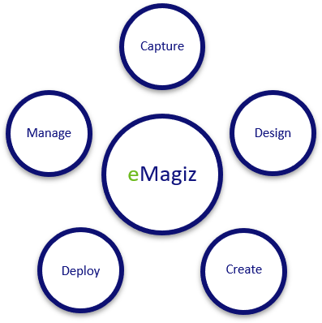

microlearning/crashcourse-platform-intro-technrequirements
Technical requirements before starting in eMagiz
In this microlearning we will focus on learning how to start off with the eMagiz environment before entering into the Capture phase. What things to I need to know before starting?
Should you have any questions, please contact academy@emagiz.com.
- Last update: February 2nd 2021
- Required reading time: 5 minutes
1. Prerequisites
- Basic knowledge of integrations in general
2. Key Concepts
This microlearning will list out the techical requirements that need to be gathered before starting in eMagiz. Often DevOps teams are using DoR to understand what is needed before start the work - this helps to input such lists. Technical requirements in this context are the things that describe the integration, and are needed to perform the Capture & Design phase of eMagiz. Next to that, the proper solution needs to be selected for the integration problem. Different integration patterns exist which are described after this whole module.
3. Technical requirements
Integration can be regarded as something that is privi to the Developer savy people, but eMagiz provides a unique way to connect IT people with the Business people using a platform that allows to create integration fast, capture the integration and associated business process inside the platform, and make the complete technical infrastructure transparent for both business and IT people involved.
The eMagiz platform uses the Integration Lifecycle Manager as guidance to create integrations with.
1. Connectivity - In this phase, the involved systems and integrations are drawn into a canvas. The canvas provides insight into the integration landscape including all systems involved, direction and naming. This canvas is viewable throughout the entire platform. All technical requirements and descriptions can be stored here making external documentation unnecesssary.
2. Definitions - In this phase all the definitions of the system messages and associated transformation mappings are created. This phase is next to the previous phase very important and often handled by experienced staff. The connectivity and data model are designed here as well as the architecture of the integration deployment is designed. The way the different components that are required are spread across the cloud and client infrastructure is determined. It provides insight for architects around sizing of Cloud components.
3. Frequency & size - In this phase the integration is autogenerated based in the Design settings and complemented with low-code building blocks. It includes unit test functionality to speed up realisation and test integration before the user acceptance testing.
4. Deploy - In this phase, the integration model from the 3 previous ILM phases is deployed using release management functionality and deployment plans that can run automatically. The deploy phase also contains functionality to see what components are running where, the live status of the flow and allows to influence the properties under which the flows are running.
5. Manage - in this phase, the integrations can be seen from a monitoring and alerting perspective. Running integrations that produces errors are displayed, runtime components have specific logging that is also displayed here. All these elements can generated alerts that can be send to involved staff and support systems.

4. Assignment
There is no assignment for this microlearning other than reviewing the videos from the website mentioned below.
5. Key takeaways
- eMagiz allows business and IT people to work jointly to create integratins
- eMagiz is a comprehensive platform that allows ad-hoc integrators to perform all required activities to run the platform
- The ILM phases are key in the way of work in eMagiz.
6. Suggested Additional Readings
We recommend to read the above link to the eMagiz website and see the features of the platform in more detail.
7. Silent demonstration video
See above point for understanding the features of the platform.